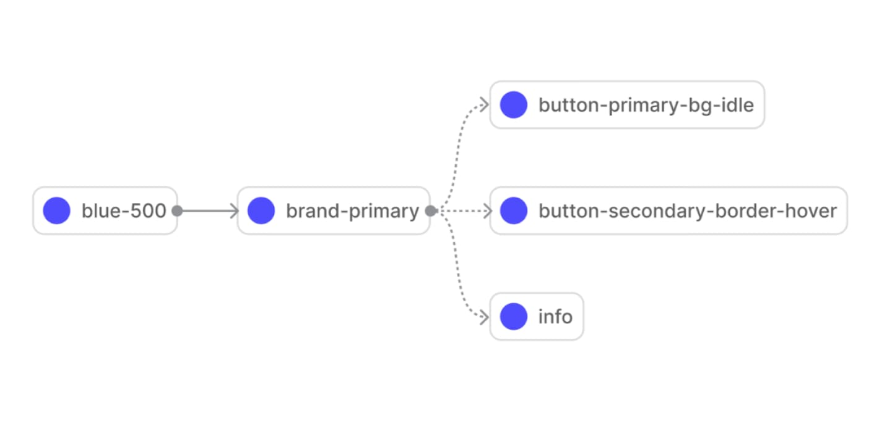
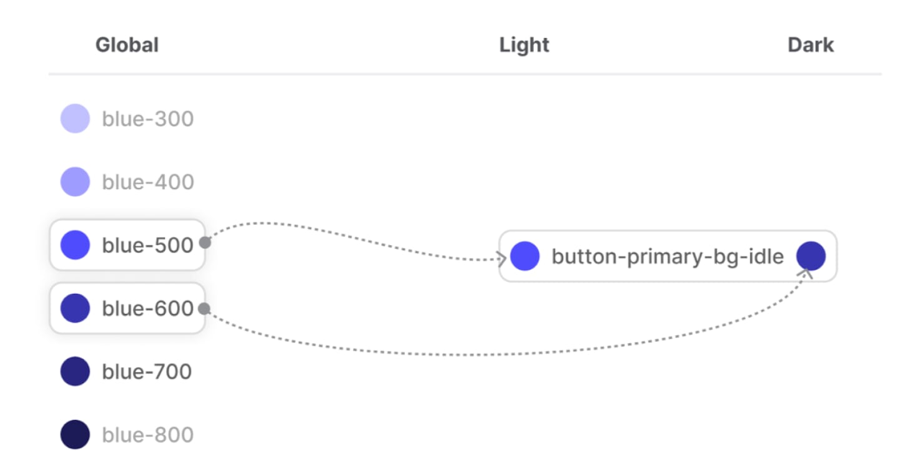
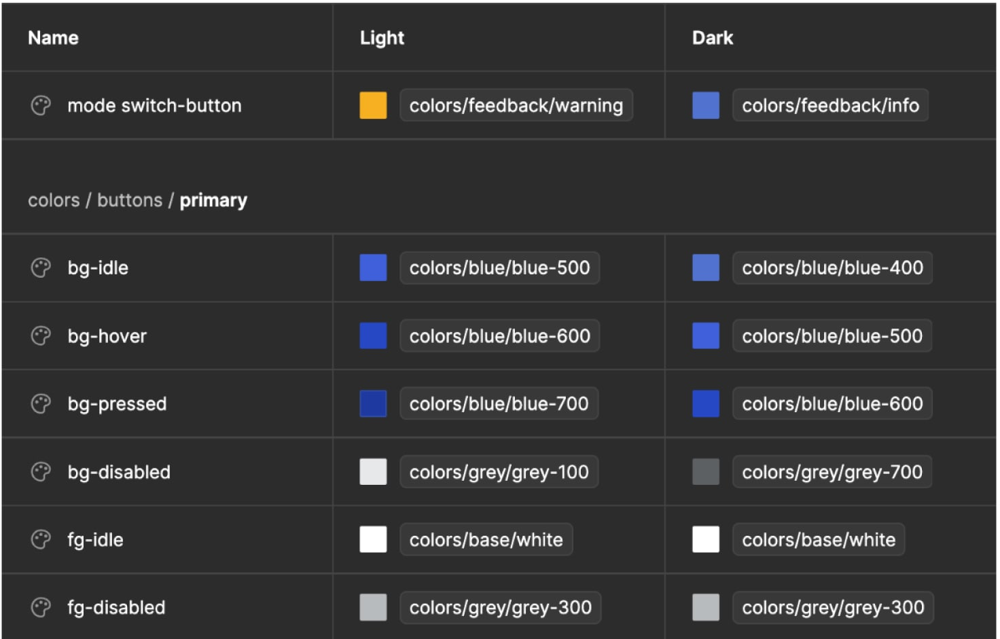
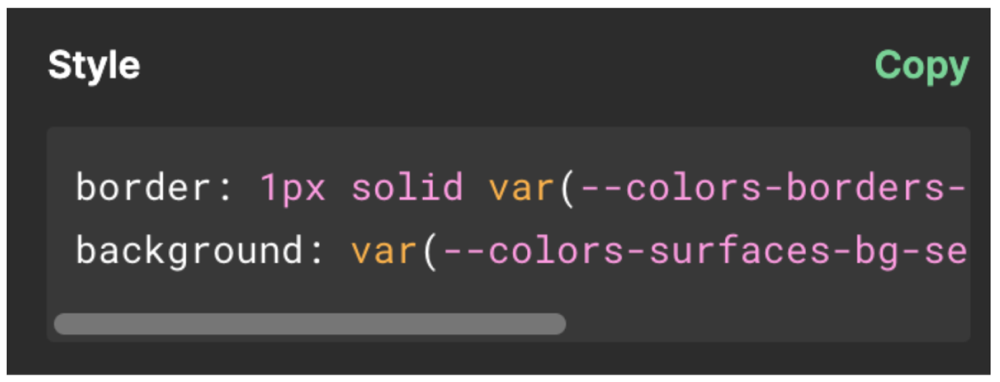

עקביות עיצוב בסקייל: ניתוח Variables בפיגמה
Variables עוזרים לנו, מעצבי הסיסטם, לשמור על היסודות שלנו עקביים, גמישים ומוגדרים היטב, מה שכמובן מביא לכך שעבודת המעצבים תהיה יעילה יותר, מהירות הצוות גבוהה יותר ובאופן כללי כולם יהיו שמחים יותר :)
מאת: יוליה סקיגר | 4 דקות קריאה | 28.01.2024
אין ספק שכולם התלהבו מהפיצ׳רים ש-Figma שחררה ביוני 2023 ובעיקר פיצ׳ר ה-Variables (כולנו שמענו את מחיאות הכפיים ב-Config 🙂). לפני כן, דיזיין סיסטמס נבנו עם סטיילים מובנים של Figma או באמצעות אינטגרציות חיצוניות (לדוגמה Tokens Studio) כדי להקים בסיס עקבי של צבעים, אפקטים ומרווחים במערכת.
מה הם Variables?
אני די בטוחה שלרובכם יש מושג לגבי Variables אם התעניינתם במאמר הזה, אבל ליתר ביטחון בואו נעבור על זה שוב: Variable הוא משתנה מופשט שיכול להחזיק ערכים מסוימים. בהקשר של Figma, Variables מאחסנים החלטות עיצוביות. לדוגמה, בדיזיין סיסטם ההיפותטית שלנו יכול להיות משתנה צבע בשם "background" שמחזיק בערך HEX מסוים - #FFFFF. יש 4 סוגי Variables שזמינים כרגע ב- Figma: צבע (כמובן מאחסן ערכי צבע), מספר (ריווח, רדיוס פינות, מידות), string (תוכן טקסט) ובוליאני (משמש להצגה או הסתרה של אלמנט כלשהו). Variables עוזרים לנו, מעצבי הסיסטם, לשמור על היסודות שלנו עקביים, גמישים ומוגדרים היטב, מה שכמובן מביא לכך שעבודת המעצבים תהיה יעילה יותר, מהירות הצוות גבוהה יותר ובאופן כללי כולם יהיו שמחים יותר :) למרות שכרגע פיצ׳ר ה-Variables של Figma עדיין בגרסת בטא וה-UX אינו מושלם, ההימור הטוב ביותר של כל מעצב סיסטם יהיה לשקול לעבור להשתמש ב-Variables בהקדם האפשרי, ואנו הולכים להסביר מדוע במאמר זה.
Variables כאן כדי להישאר
Variables כבר מכסים 99.9% מצרכי ניהול הצבע (color management) בדיזיין סיסטם, ועם תמיכת גרדיאנט בקרוב לא יהיה צורך בסטיילים צבע. הפיצ׳ר פונקציונלי לגמרי למרווחים ורדיוס פינות, והבאים בתור הם טוקנים של טיפוגרפיה ו-Variables של קומפוננטות. השימוש בסטיילים בשלב זה נראה כמו רעיון טוב רק עבור טוקנים מורכבים, כלומר טוקן המורכב ממספר פרמטרים (לדוגמה, fill בעל מספר שכבות מילוי או הצללה המשלבת כמה פרמטרים (צבע, פיזור, מרחק). ניתן לשער כי Variables יהיו משופרים ויתמכו יותר מסטיילים ב- Figma בשנים הקרובות.
Variables יודעים להתחבר אחד עם השני
זה אחד הדברים הכי חזקים בפיצ׳ר הזה. אתם רק צריכים להגדיר את ה-dependencies של הדיזיין סיסטם פעם אחת, ותהיה לך מערכת ניתנת להרחבה וגמישה עבור ספרינטים רבים קדימה. אם אתם מחליפים צבע, פשוט מחליפים את ערך ה-HEX שלו בתא אחד, וכל הרכיבים יתעדכנו בהתאם. אם פתאום מתחשק לך להשתמש בפינות מעוגלות של 12 פיקסלים במקום 6 פיקסלים, תוכלו לעשות זאת בלחיצת כפתור אחת. לעומת זאת אם תרצו לשנות טוקן אחד ספציפי כמו למשל הטוקן שלכם ל-info (שכנראה מקושר לצבע הכחול בגלובל) תוכלו פשוט לקשר אותו לכחול אחר מהגלובל ולא תהרסו שום דבר אחר - כלומר תוכלו לעשות שינוי נקודתי.
Variables יעזרו לך להגדיר את מצב הדארק-מוד המיוחל
עם המודים של Variables, אין צורך עוד ליצור ספריות סטיילים משוכפלות - אחת עבור מצב בהיר ואחת למצב כהה. גם לא צריך להיעזר בפתרונות חיצוניים (כמו Themer או Tokens Studio). פשוט מגדירים את צבעי המוצר שלך במצב בהיר, ולאחר מכן מוסיפים מצב נוסף, תוך שינוי ה-alias לצבעים הגלובאליים שבהם רוצים להשתמש במצב כהה. וזהו - אפשר להעביר את העיצוב שלך ממצב בהיר לכהה בלחיצה אחת.
Variables מתאימים מאוד למוצרי מולטי ברנד
לפי אותו היגיון, Variables הם פתרון מצוין עבור מוצרים בעלי וויט-לייבל או ערכות נושא שונות, מכיוון שאפשר להשתמש במודים כדי ליצור סטים נפרדים של Variables עבור לקוחות או ערכות נושא שונות. צריך לוודא שמספר המותגים/המוצרים שלך מתאים לתוכנית Figma הנוכחית שלך - יש מגבלות על מספר המצבים הזמינים, תלוי אם אתה בתוכנית Organization או Enterprise. ֿיתרה מכך, עם Variables, אפשר ליצור ספריית רכיבים בודדים שתשרת מספר מותגים או מוצרים. כן יש עבודה על הגדרה הראשונית, אבל בטווח הארוך, לעולם לא תצטרכו לדאוג לגבי הגדילה של דיזיין סיסטם שלך. מכיוון שכל החלטות העיצוב מאוחסנות במקום מרוכז וקיימת קישוריות בין Variables גלובליים לסמנטיים, ניתן להתאים ולהרחיב את הדיזיין סיסטם באופן רוחבי (הוספת מותגים/מצבים חדשים) ואנכי (הוספת החלטות עיצוב חדשות ב- אוספים קיימים).
Variables הם מעבר לעיצוב חזותי
מה אם תוכלו להשתמש ב-Figma כדי לנהל לא רק החלטות עיצוב אלא גם מיקרוקופי? או אם למוצר שלך יש גרסאות במספר שפות? String Variables מאפשרים ליצור UX עקבי בכל המוצרים או לשנות במהירות את העיצובים שלך לשפות אחרות (שוב, באמצעות מודים). למרות שנדרשת עבודה ידנית לתרגום והזנת טקסט, זה ללא ספק פתרון טוב לניהול מיקרוקופי בדיזיין סיסטמס מפותחות.
Variables עוזרים למעצבים ולמפתחים לתקשר
עם חיבור הקוד ב-DevMode, מעצבים ומפתחים יכולים סוף סוף להיות מיושרים ולא ללכת לאיבוד במונחים השונים. לאחר שתגדירו את הVariables שלך ותחילו אותם על העיצובים שלך, צוות הפיתוח יוכל: א) לראות את הקוד סינטקס (שימו לב ש-DevMode הוא כרגע בתשלום) ב) לייצא את כל אוסף הVariables כ-JSON, מה שחוסך טונות של פינג-פונג על ״הכחול הזה שהוא בערך כמו הכחול שעיצבנו אבל לא בדיוק". אוסף אחד - JSON אחד - source of truth אחד - 0 אי עקביות.
Variables פותחים הזדמנויות חדשות לעיצוב מוצר
עם חיבור הקוד ב-DevMode, מעצבים ומפתחים יכולים סוף סוף להיות מיושרים ולא ללכת לאיבוד במונחים השונים. לאחר שתגדירו את הVariables שלך ותחילו אותם על העיצובים שלך, צוות הפיתוח יוכל: א) לראות את הקוד סינטקס (שימו לב ש-DevMode הוא כרגע בתשלום) ב) לייצא את כל אוסף הVariables כ-JSON, מה שחוסך טונות של פינג-פונג על ״הכחול הזה שהוא בערך כמו הכחול שעיצבנו אבל לא בדיוק". אוסף אחד - JSON אחד - source of truth אחד - 0 אי עקביות.
העתיד של Variables
ודבר אחרון, והפעם זה בעצם יותר על עיצוב מוצר ולא על סיסטם. פיתוח Variables בוליאניים והאפשרות לחבר אותם לגרסאות רכיבים פתחה עולם חדש לגמרי ליצירת פרוטוטייפ ב-Figma. אנחנו לא הולכים לצלול לתוכו במאמר הזה, בגלל שזה נושא עצום, אבל הרשו לי לומר זאת: עם הVariables החדשים ותכונות הפרוטוטייפ, אפשר לבנות מוצרים פונקציונליים באמצעות Figma בלבד. כמובן שלתכונות האלה יש מגבלות, אבל בדיקות השמישות פשוט הפכו להרבה יותר קלות ועלותן ירדה באופן דרסטי בעקבות הדבר הזה.
יוליה סקיגר
System Designer ב- kido
מאמרים מומלצים:
מה זה חוב עיצובי, ומה הקשר שלו ל- DesignOps
מאת: דינה ניימן
Design System, Dev ומה שבינהם
מאת: אתי לייפר שרביט